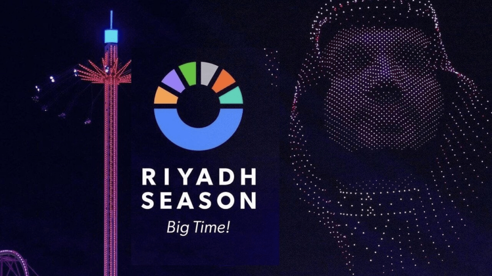

A Season of Wonder: Riyadh's Transformation

Today marks the start of the Riyadh season,
and people from all over the kingdom and the whole world
are flocking to the capital city to experience
its enchanting transformation.
This annual extravaganza, a testament to Saudi Arabia's
burgeoning cultural scene,
offers a kaleidoscope of entertainment,
from thrilling concerts and dazzling shows
to immersive exhibitions and culinary delights.
Riyadh,
once known primarily for its historical significance,
has evolved into a vibrant metropolis pulsating with energy.
The city's skyline, adorned with towering skyscrapers
and modern architectural marvels,
stands as a testament to its rapid development.
However, it is during the Riyadh season that the city truly comes alive,
showcasing its unique blend of tradition and modernity.
One of the highlights of the Riyadh season is the diverse range of cultural events on offer.
From traditional Saudi performances to international acts,
there is something to cater to every taste.
Music lovers can indulge in concerts featuring
world-renowned artists,
while theater enthusiasts can enjoy captivating plays and musicals.
For those seeking a more immersive experience,
the city offers a variety of exhibitions
and cultural festivals
that showcase the rich heritage of Saudi Arabia.
Beyond the cultural offerings,
the Riyadh season also provides opportunities for adventure and exploration.
Visitors can embark on thrilling desert safaris, explore historical sites,
or simply relax in luxurious accommodations.
The city's vibrant food scene,
featuring a fusion of local and international cuisines,
ensures that there is something to satisfy every palate.
The Riyadh season is not only a celebration of culture and entertainment
but also a testament to Saudi Arabia's commitment to progress and openness.
By hosting such a grand event,
the kingdom aims to position itself as a global destination for tourism and investment.
The season's success has not only boosted the local economy
but has also helped to foster a sense of pride and unity among the Saudi people.
As the Riyadh season unfolds,
it is clear that the city has transformed into a cultural hub
that rivals the world's most renowned metropolises. With its vibrant atmosphere,
diverse offerings, and commitment to excellence,
the Riyadh season is a must-see event for anyone seeking a truly unforgettable experience.